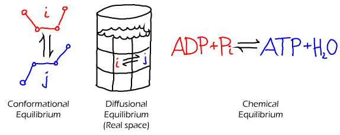
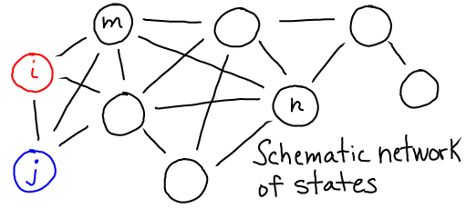

$
\newcommand{\conc}[1]{[\mathrm{#1}]}
\newcommand{\conceq}[1]{[\mathrm{#1}]^{\mathrm{eq}}}
\newcommand{\kcat}{k_{\mathrm{cat}}}
\newcommand{\kdt}{k_{\mathrm{dt}}}
\newcommand{\kdtsol}{k^{\mathrm{sol}}_{\mathrm{dt}}}
\newcommand{\kij}{k_{ij}}
\newcommand{\kji}{k_{ji}}
\newcommand{\kkeq}{K^{\mathrm{eq}}}
\newcommand{\kmmon}{\kon^{\mathrm{ES}}}
\newcommand{\kmmoff}{\koff^{\mathrm{ES}}}
\newcommand{\kconf}{k_{\mathrm{conf}}}
\newcommand{\koff}{k_{\mathrm{off}}}
\newcommand{\kon}{k_{\mathrm{on}}}
\newcommand{\ktd}{k_{\mathrm{td}}}
\newcommand{\ktdsol}{k^{\mathrm{sol}}_{\mathrm{td}}}
\newcommand{\ss}{\mathrm{SS}}
$
Introduction to the Key Ideas: States, Rates, and Transitions
Biological systems can be described by the states which can be occupied, and the way in which the system switches from one state to another.

- States may be defined in many different ways. For example, a conformational state of a protein typically refers to a collection of similar conformations. The state of larger scale-system (e.g., an entire cell) could be described by the number of copies of each type of molecule. States of a diffusing system could refer to different physical locations.
- Transitions may occur directly between some states, as suggested by the lines in the figure below. These transitions dictate the temporal behavior of the system.
- Transitions are generally assumed to occur with a certain rate constant, or probability per unit time, based solely on the present state and independent of prior history (i.e., in a Markovian way). See Mass Action Kinetics.

Transition rates (rate constants)

- The transition rate $\kij$ is the (conditional) probability per unit time
of making a transition from state i to state j. This is the probability given
the condition that the system is already in state i. Sometimes $\kij$ is called
the rate constant to distinguish it from the overall rate or flux, below.
See the discussion of different types of mass action rates.
- Every physical process is reversible, so the reverse rate (j to i) must exceed
zero if the forward rate (i to j) does. Thus, you should always expect to see
double arrows as in the diagram above. In some cases, one direction is
so slow that its effect is negligible, only a single arrow is shown - but the reverse process is still possible.
Fluxes, or Overall Rates
The flux (sometimes called overall rate or, confusingly, just the rate) is defined to be the total number of events per unit time, though in some cases this will be normalized to represent the total probability making a certain transition per unit time.
- The flux from i to j is calculated, as the number of systems in state i ($N_i$) multiplied by the rate constant. Several notations, shown below, can be used.
- The rate constant, as the name suggests, is assumed constant, but the state population can vary with time. See the mass action page for the conditions on the assumption of rate constancy.